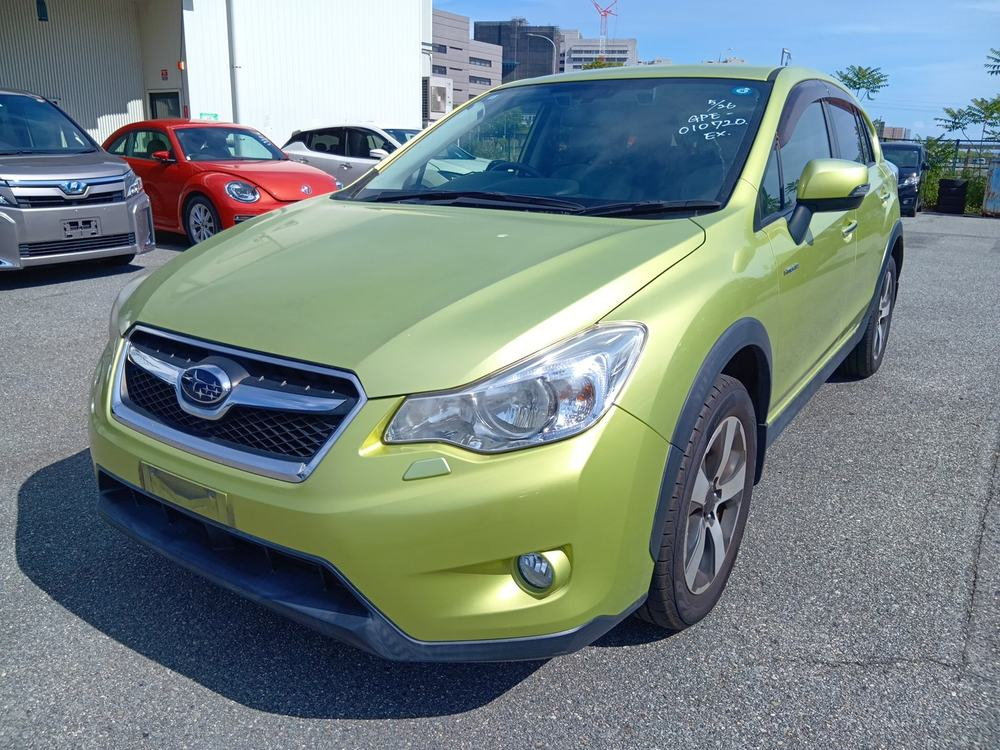
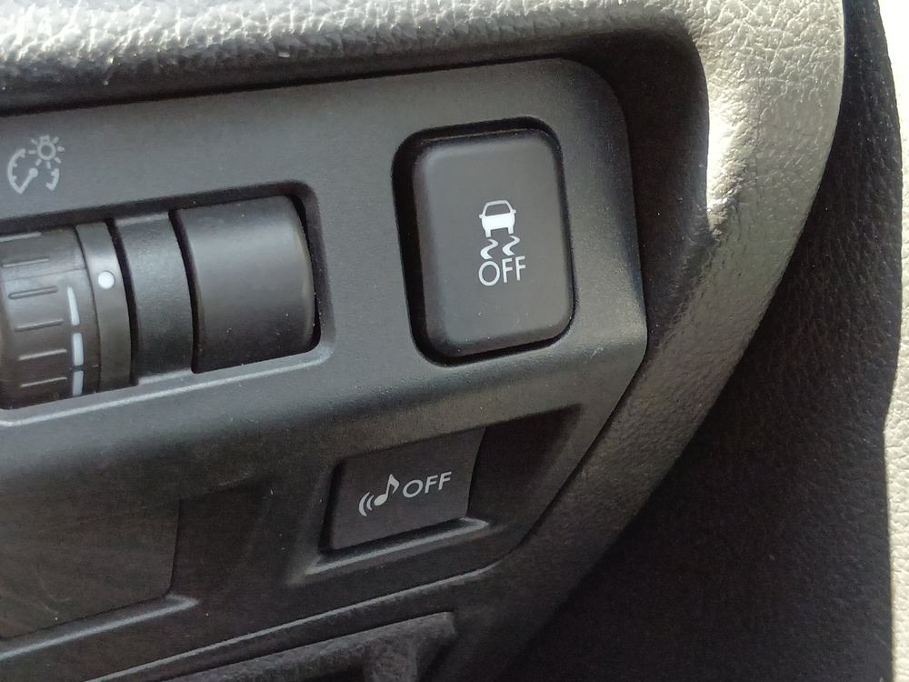
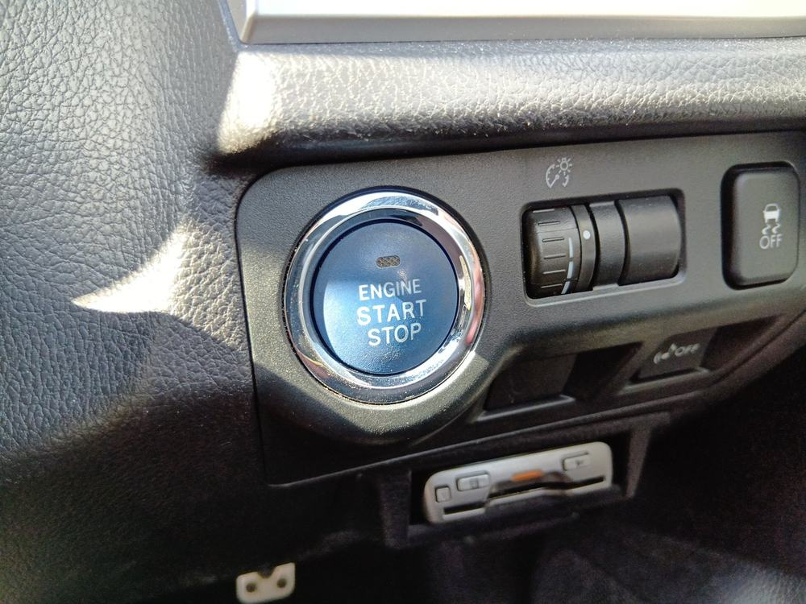
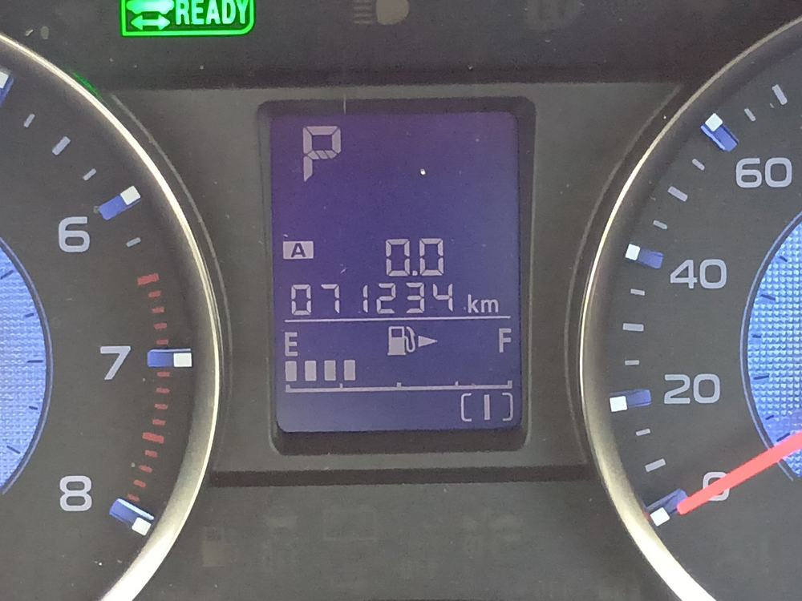
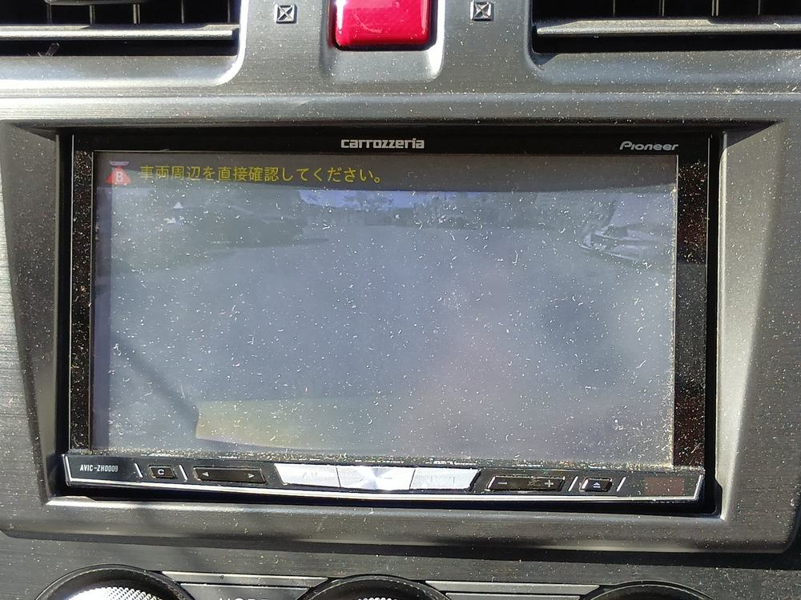
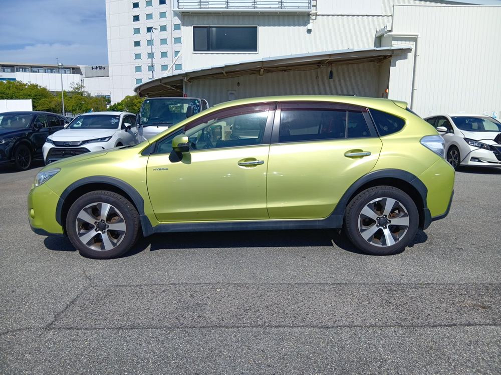
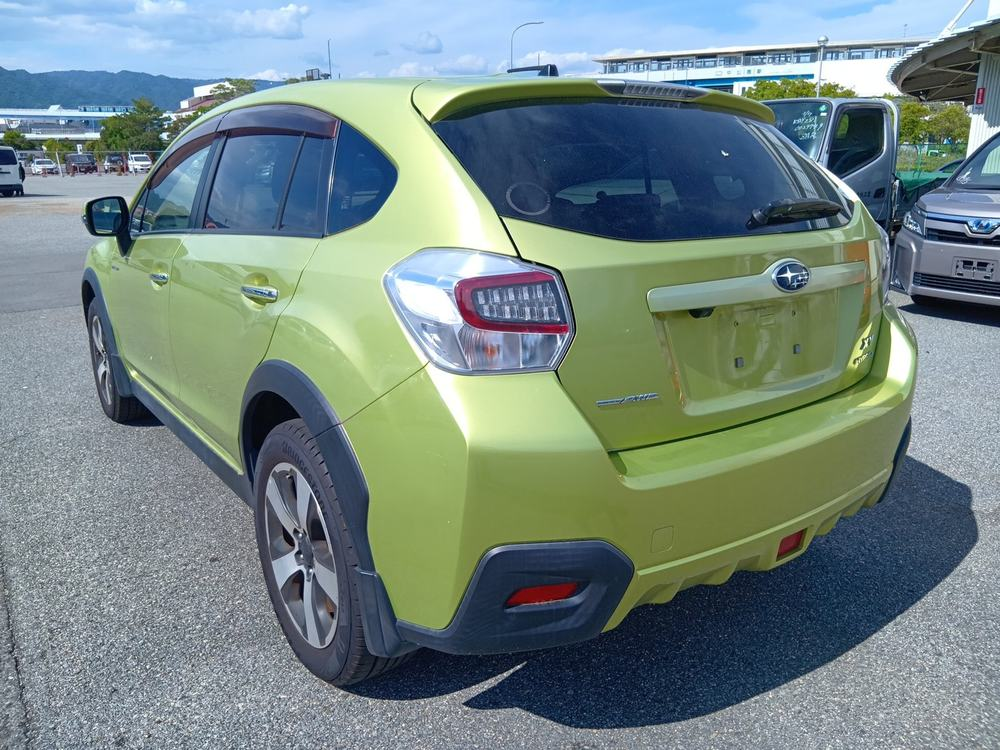

Ask us for the condition details and a quote to your port.

| Year | 2014 |
| Mileage | 71,232 km |
| Drive | 4WD |
| Fuel | Petrol |
| Transmission | AT |
| Engine | 2,000 cc |
| Colour | Light green |
| Steering | Right |
| Model grade | 2.0 i-L Eyesight |
Actual photos, not edited. More photos, a walk-around video and the inspection sheet are available on request.
Steering wheel/Scrub, Partial body/Paint faded, Partial underneath/Rust, Clean interior and exterior
Push Start, VSC, Back Camera, Navigation system, Smart key, Cruise control






Please confirm that this vehicle can be imported and registered in your country before ordering. Tell us the country and we will check the rule with you.
Register free, open the Japan auction list, and send your maximum price with the Make Bid form. We bid on your behalf.
Register (free)How bidding and deposit workOne message is enough: your country or port, your budget and currency, and when you plan to buy.
Get a free quote on WhatsAppOr send an enquiry form